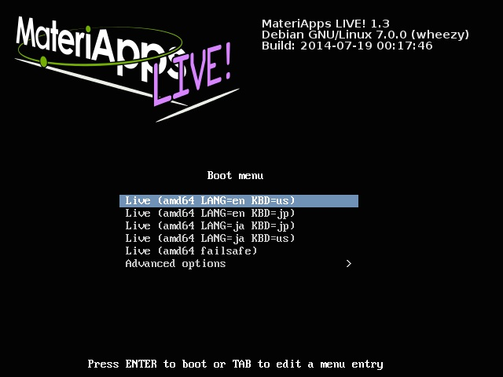
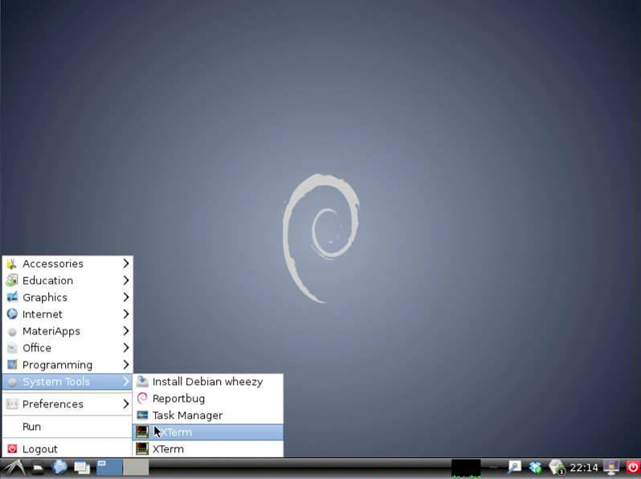
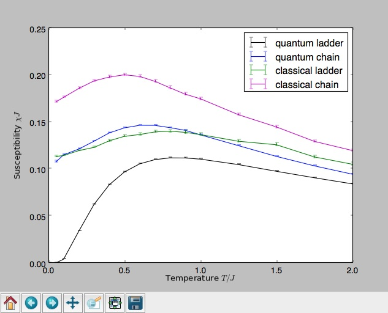
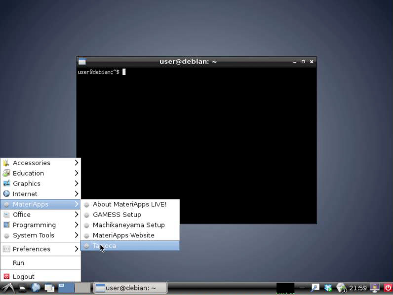

MateriApps LIVE! / Getting Started
[English/日本語]
The latest version of this document is available at https://github.com/cmsi/MateriAppsLive/wiki/GettingStarted-en.
- Installed Applications
- How to run MateriApps LIVE!
- How to use MateriApps LIVE! Applications
CAUTION: Please follow the procedures written in the section "2. How to run MateriApps LIVE!". Incorrect procedures may damage your operation system.
2. How to run MateriApps LIVE!
In the followings, we explain the way to boot MateriApps LIVE! from USB stick. Please refer to MteriApps LIVE! OVA version, for the usage of MateriApps LIVE! OVA version in VirtualBox.
Insert the MateriApps LIVE! USB into a USB port after power of your computer is turned off.

Open a boot device menu.
- A method for opening the boot device menu depends on your computational environment. Usually, the boot device menu opens by pressing a F2 or F12 button during startup of your computer.
- For Mac OS X, the boot device menu opens by pressing [option (Alt)] key.
- For some models of Mac machines or versions of Mac OS X, there is a known problem that the boot menu does not open even by pressing [option (Alt)] key. For more information, please access to the following website: https://github.com/cmsi/MateriAppsLive/wiki/KnownProblems, https://github.com/cmsi/MateriAppsLive/wiki/MacBook.
When you find other problems, please report the environment of your machine (models, and versions of the Mac OS) to us.
Select and launch the USB memory in the list of the boot devices.
Select [Live (amd64 LANG=en KBD=us)] in the start screen and press the [Enter] key.
- CAUTION: DO NOT select [Install, Graphical install] in [Advanced options]. This procedure deletes all data in your HDD and overwrites Debian Linux onto your operation system.

Debian/GNU Linux starts in a few minutes, and the desktop screen appears.
Select [Accessories]-[LXTerminal] from the menu bar at the lower-left corner of the desktop.

The applications is started on this terminal.

To shut down MateriApps LIVE!., press the red button which is located at the lower-right corner of the desktop and select [Shutdown]. You can keep your data files saved in the home directory, and can use them also in the next time you launch the system. The files are stored in the USB memory.
3. Information of each application
Directions for use the applications on MaterApps LIVE! is available at MateriApps LIVE! Wiki. For more detailed information, please refer to the MateriApps page of each application. In this document, we explain how to run AkaiKKR, ALPS, ERmod, feram, Gromacs, OpenMX, SMASH, xTAPP & TAPIOCA.
AkaiKKR (旧Machikaneyama2002)
How to setup AkaiKKR
No additional setup is needed. Please observe the followint license upon using AkaiKKR.
This AkaiKKR binary package is built and distributed for trial use on MateriApps LIVE! . For extensive use or production run, please register yourself at the AkaiKKR official web site and use the recent official source code.
Example (Co)
Copy /usr/share/akaikkr/in.
cp -rp /usr/share/akaikkr/in .
Make out and data directories
mkdir out data
Run AkaiKKR
specx < in/co
For more detailed information, please look at "AkaiKKR Information" in MateriApp LIVE! wiki.
ALPS
- Tutorials: Sample files are available in /usr/share/alps/tutorials
Example (Tutorial MC-02 Calculating magnetic susceptibilities by the classical MC and looper QMC codes)
Copy tutorial files
cp -rp /usr/share/alps/tutorials/mc-02-susceptibilities $HOME
cd $HOME/mc-02-susceptibilities
Execute Python scripts
python tutorial2a.py
python tutorial2b.py
python tutorial2c.py
python tutorial2d.py
python tutorial2full.py
At the end of each Python script, calculation results will be plotted. The Python scripts finishes after closing the window by clicking the top-right 'X' mark. By executing the last script, all the results will be plotted in one figure.

For more detailed information, please look at "ALPS Information" in MateriApp LIVE! wiki.
ERmod
Tutorial: Sample files are available in /usr/share/ermod/example/gromacs.
In the following example, the solvation free energy of ethanol in water is calculated from sample configuration files of GROMACS.
Create a working directory and copy a set of input files into the directory
mkdir ermod
cp -r /usr/share/ermod/example/gromacs/* ermod
cd ermod
Execute a command "gen_structure".
/usr/share/ermod/tools/gromacs/gen_structure --top etohsolution.top
User is asked which molecule is the solute. In the example case, ethanol is the solute, so you should type "Ethanol". You can find new directories named "soln" and "refs".
Calculate an energy distribution function between solute and solvent from the MD trajectory in solution system (including ethanol and water).
cd soln
/usr/share/ermod/tools/gromacs/gen_input --traj ../solution_run.xtc --log ../solution_run.log
ermod
A set of structures derived from the MD trajectory in solute system (only ethanol in vacuum) inserts into the snapshots (coordinates) of MD trajectory in solvent system (only water).
cd ../refs
/usr/share/ermod/tools/gromacs/gen_input --traj ../solvent_run.xtc --log ../solvent_run.log --flexible ../solute_run.xtc
ermod
User obtains an energy distribution function from the insertion operation. Please note that the calculation on this step needs a little time to finish. If user wants to accelerate the calculation, add an option of "maxins=100" (the number is set arbitrarily) in "parameters_er". This option represents the number of solute insertions per one snapshot of solvent trajectory (the default number is 1000). If user reduces this number, the calculaton finishes faster, but the result is less accuracy.
Calculate the solvation free energy. (The last line of output is the final estimate of the solvation free energy.)
cd ..
slvfe
For more detailed information, tutorial, and theory, please refer to http://sourceforge.net/p/ermod/wiki/Home/.
feram
feram is a fast molecular dynamics (MD) simulator for ferroelectrics. More information is available at feram homepage http://loto.sourceforge.net/feram/.
- Examples are provided in /usr/share/feram/example/.
feram command is placed in the search path. It can be executed as feram foo123.feram in LXTerminal.Example (hysteresis loop will be drawn after simulation for tens of minutes)
cp -a /usr/share/feram/example/27example-BaTiO3-new-param-E_wave .
cd 27example-BaTiO3-new-param-E_wave
feram 360cos.feram 360sin.feram
./hysteresis.gp
evince hysteresis.eps
Gromacs
- Tutorial: Sample files are available in /usr/share/gromacs/tutor.
Example
In the following example, we will execute molecular dynamics simulation on a peptide molecule in water solvent by turns; 1) making a structure file, 2) introducing water solvent, 3) energy minimization calculations, 4) molecular dynamics simulation on water molecules with fixing the peptide molecule, 5) molecular dynamics simulation of the peptide molecule in water solvent, 6) visualization of simulation result using ngmx, the visualization software containing in GROMACS.
Make an executing directory and copy the input files.
mkdir gromacs
cp -r /usr/share/gromacs/tutor/* gromacs
cd gromacs/gmxdemo
chmod +x demo
Execute the demo script.
./demo
The structure data of peptide is in cpeptide.pdb that is placed on the same directory. Information about commands used in each step of calculation is available by opening the demo script by a text editor. After starting up the demo script, push the Enter key following the examination on the terminal. Finally, the visualization software ngmx will display.
Operate the visualization software ngmx.
After ngmx starts up, check the “Protein” on the popping dialog box and click the OK button. The boundary of the system and the calculated peptide molecule will display. Choose “Animate” inside “Display” menu on the upper menu bar. A dialog box will display on the bottom of the window. Click ">>" button and you will watch the move of the peptide molecule.
OpenMX
- Tutorial: Sample files are available in /usr/share/openmx/work/.
Example
Make a directory for execution and copy an input file
mkdir openmx
cp /usr/share/openmx/work/Methane.dat openmx
cd openmx
Run OpenMX
openmx Methane.dat
Check of execution results
Please compare the results with those on http://www.openmx-square.org/openmx_man3.7/node16.html.
SMASH
Tutorial: Sample files are available in /usr/share/smash/example.
Example
In the following example, the Hartree-Fock energy calculation of Anthracene (C14H10) with the 6-31G basis set and the visualization of its HOMO and LUMO are performed. The smash-vtk-generator file attached in SMASH and open source software ParaView are required for visualization.
Generate a directory for execution and copy the input file.
mkdir smash
cd smash
cp /usr/share/smash/example/anthracene.inp .
Exectute SMASH.
smash < anthracene.inp > anthracene.out
After the execution, two files are generated, the output file "anthracene.out" and the checkpoint file "anthracene.chk". The output file can be seen as a text file, which shows the computational conditions, atomic coordinates, basis functions, SCF processes, MO energies, and MO coefficients.
Generate vtk files for HOMO and LUMO (anthracene-HOMO.vtk and anthracene-LUMO.vtk).
smash-vtk-generator anthracene.chk anthracene-HOMO.vtk MO HOMO
smash-vtk-generator anthracene.chk anthracene-LUMO.vtk MO LUMO
- Start Parview Viewer from the bottom right menu.
- Select Load State from File menu and open the /usr/share/smash/vtk/mo-view.pvsm file.
- Open the anthracene-HOMO.vtk file, and you can see the contour map of HOMO.
- To display LUMO, open the anthracene-LUMO.vtk file after opening the /usr/share/smash/vtk/mo-view.pvsm file.
For more detailed information, please look at "SMASH Information" in MateriApps LIVE! Wiki.
xTAPP & TAPIOCA
- Sample files are available in the following directories
- xTAPP samples: /usr/share/xtapp/sample
- TAPIOCA samples: /usr/share/tapioca/sample
Examples
Make directory for execution
mkdir $HOME/xtapp
Copy sample shell scripts
cp /usr/share/xtapp/check/* $HOME/xtapp
cd $HOME/xtapp
Example 1: simulation of silicon
Execute si.sh
sh si.sh
Example 2: simulation of alpha-quarts
Execute quartz.sh
sh quartz.sh
Execution of TAPIOCA
Type 'tapioca' in the terminal or execute from bottom-left menu (MateriApps > tapioca).

For more detailed information, "Information of xTAPP & TAPIOCA" in MateriApp LIVE! wiki.